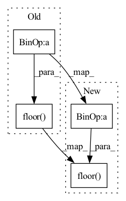

Pattern ID :1944

Before Change
F.interpolate, mode="bicubic", align_corners=True)
for scale in range(num_scales + 1):
base_ch = min(base_channels * pow(2, math.floor(scale / 4)), 128)
min_feat_ch = min(
min_feat_channels * pow(2, math.floor(scale / 4)), 128)
After Change
F.interpolate, mode="bicubic", align_corners=True)
for scale in range(num_scales + 1):
base_ch = min(base_channels * pow(2, int(np.floor(scale / 4))),
128)
min_feat_ch = min(
min_feat_channels * pow(2, int(np.floor(scale / 4))), 128)
In pattern: SUPERPATTERN
Frequency: 4
Non-data size: 4
Instances
Fragment ID: 4728696
Project Name: open-mmlab/mmgeneration
Commit Name: 50fd90a2505d8ea4fc287d20ffab0082b398f3ab
Time: 2021-05-26
Author: kelvinckchan@outlook.com
File Name: mmgen/models/architectures/singan/generator_discriminator.py
M Class Name: SinGANMultiScaleGenerator
N Class Name: SinGANMultiScaleGenerator
M Method Name: __init__(10)
N Method Name: __init__(10)
M Parent Class: nn.Module
N Parent Class: nn.Module
M File Name: mmgen/models/architectures/singan/generator_discriminator.py
N File Name: mmgen/models/architectures/singan/generator_discriminator.py
M Start Line: 68
M End Line: 70
N Start Line: 68
N End Line: 71
'>
Before Change
def __init__(self, inplanes, planes, stride=1, downsample=None, cardinality=32, base_width=4):
super(ResNeXtBottleneckC, self).__init__()
width = math.floor(planes / 64 * cardinality * base_width)
self.conv1 = nn.Conv2d(inplanes, width, kernel_size=1, bias=False)
self.bn1 = nn.BatchNorm2d(width)
self.conv2 = nn.Conv2d(width, width, kernel_size=3, stride=stride,
After Change
def __init__(self, inplanes, planes, stride=1, downsample=None, cardinality=32, base_width=4):
super(ResNeXtBottleneckC, self).__init__()
width = math.floor(planes * (base_width / 64)) * cardinality
self.conv1 = nn.Conv2d(inplanes, width, kernel_size=1, bias=False)
self.bn1 = nn.BatchNorm2d(width)
'>
Fragment ID: 4728699
Project Name: alvinwan/nbdt-pytorch-image-models
Commit Name: 5cb1a35c6bae7a27221dd0114e7c3667b19da072
Time: 2019-04-01
Author: rwightman@gmail.com
File Name: models/resnext.py
M Class Name: ResNeXtBottleneckC
N Class Name: ResNeXtBottleneckC
M Method Name: __init__(7)
N Method Name: __init__(7)
M Parent Class: nn.Module
N Parent Class: nn.Module
M File Name: models/resnext.py
N File Name: models/resnext.py
M Start Line: 22
M End Line: 22
N Start Line: 22
N End Line: 22
'>
Before Change
super().__init__()
self.blocks = nn.ModuleList()
for scale in range(num_scales + 1):
base_ch = min(base_channels * pow(2, math.floor(scale / 4)), 128)
min_feat_ch = min(
min_feat_channels * pow(2, math.floor(scale / 4)), 128)
self.blocks.append(
After Change
super().__init__()
self.blocks = nn.ModuleList()
for scale in range(num_scales + 1):
base_ch = min(base_channels * pow(2, int(np.floor(scale / 4))),
128)
min_feat_ch = min(
min_feat_channels * pow(2, int(np.floor(scale / 4))), 128)
'>
Fragment ID: 4728702
Project Name: open-mmlab/mmgeneration
Commit Name: 50fd90a2505d8ea4fc287d20ffab0082b398f3ab
Time: 2021-05-26
Author: kelvinckchan@outlook.com
File Name: mmgen/models/architectures/singan/generator_discriminator.py
M Class Name: SinGANMultiScaleDiscriminator
N Class Name: SinGANMultiScaleDiscriminator
M Method Name: __init__(8)
N Method Name: __init__(8)
M Parent Class: nn.Module
N Parent Class: nn.Module
M File Name: mmgen/models/architectures/singan/generator_discriminator.py
N File Name: mmgen/models/architectures/singan/generator_discriminator.py
M Start Line: 221
M End Line: 223
N Start Line: 222
N End Line: 225